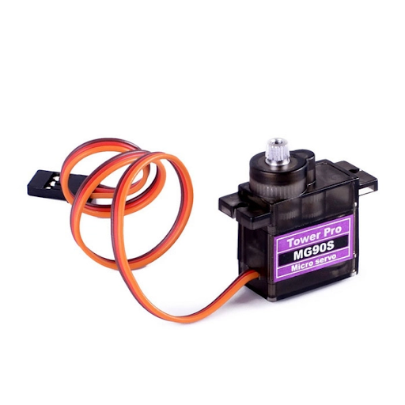

Tay gắp 2 bậc
1. Giới thiệu
Tay gắp 2 bậc là một phụ kiện mở rộng, được thiết kế để hỗ trợ cả hai tính năng gắp và nâng vật, giúp bạn dễ dàng điều khiển, lập trình robot hoàn thành các nhiệm vụ đặt ra dễ dàng hơn.
Sản phẩm sử dụng 2 động cơ Servo 180 độ. Bạn có thể gắn tay gắp này lên robot Rover, robot xBot hoặc các sản phẩm robot khác do OhStem cung cấp.
{kind=link}
2. Link sản phẩm

3. Thông số kỹ thuật
Chất liệu: Khung tay gắp 2 bậc làm từ nhựa có độ bền cao, chống gãy vỡ tốt
Sản phẩm sử dụng 2 động cơ Servo 180 độ
4. Hướng dẫn kết nối
Trên tay gắp 2 bậc được sử dụng 2 động cơ servo MG90S, loại động cơ này giúp cho lực kéo khỏe và có độ bền cao.
Thứ tự và chức năng của servo trên tay gắp 2 bậc như sau:
{kind=link}
Kết nối hai servo này vào Robot xBotnhư sau:
Servo 1 - Đóng/ Mở - Kết nối vào chân S1
Servo 2 - Nâng/ Hạ - Kết nối vào chân S2
{kind=link}
5. Hướng dẫn lập trình
Động cơ servo có thể thực hiện được lệnh xoay cánh tay động cơ đến vị trí được lập trình sẵn (từ 0 đến 180 độ) một cách tức thời hoặc theo một tốc độ cho trước.
{kind=link}
Chiều xoay của động cơ servo là hướng khi chúng ta quan sát trực diện với mặt trục xoay. Theo quy ước, chiều xoay từ phải sang trái tức ngược chiều kim đồng hồ của động cơ servo sẽ tính từ góc 0 độ đến 180 độ.
Các góc đóng - mở, nâng - hạ của tay gắp như sau:
{kind=link}
5.1 Giới thiệu khối lệnh
Trong danh mục Di chuyển, sử dụng khối lệnh sau để điều khiển servo của tay gắp:
{kind=link}
Điều khiển động cơ servo 180 độ quay tới 1 góc nào đó từ 0-180.
Note
Trên Robot xBot, có 8 cổng kết nối để điều khiển servo. Do đó, khi lập trình bạn cần chọn đúng cổng đã kết nối!
5.2 Viết chương trình
Yêu cầu: Lập trình robot mở - đóng, nâng - hạ tay gắp sau mỗi 2 giây. Lặp lại liên tục
Chương trình sẽ được thực hiện như sau:
{kind=link}
Chương trình mẫu:
Bạn có thể chương trình tại đây.
6. Hướng dẫn tạo giao điện điều khiển
Từ giao diện lập trình thiết bị xBot, bạn chọn vào Sáng tạo:
{kind=link}
Chọn tính năng vào dấu + như hình để thêm các nút nhấn vào bảng điều khiển:
{kind=link}
Giao diện mới sẽ mở ra, bạn kéo thả icon Nút nhấn thả vào vùng điều khiển bên phải như sau:
{kind=link}
Nhấn đúp chuột vào Nút nhấn, giao diện mới sẽ mở ra, bạn có thể đổi tên cho nút nhấn này thành Gắp/ Thả. Sau đó, chọn Code khi nhấn nút:
{kind=link}
Giao diện lập trình mở ra, bạn chỉ cần kéo thả khối lệnh sau ra vùng lập trình. Chọn góc 80 độ với mục đích, khi nhấn vào nút này, tay gắp sẽ thực hiện việc gắp vật. Và trở về giao diện Bảng điều khiển.
{kind=link}
Với chức năng Thả vật, bạn chọn vào Code khi thả nút và viết chương trình tương tự trên. Lưu ý, góc quay của servo lúc này là 0 độ.
Thêm một nút nhấn tương tự và thực hiện viết chương trình Nâng/Hạ vật. Kết quả được hiển thị như sau:
{kind=link}
Hoàn thành bảng điều khiển, bạn có thể kết nối Bluetooth với robot của mình và nhấn nút để điều khiển tay gắp.